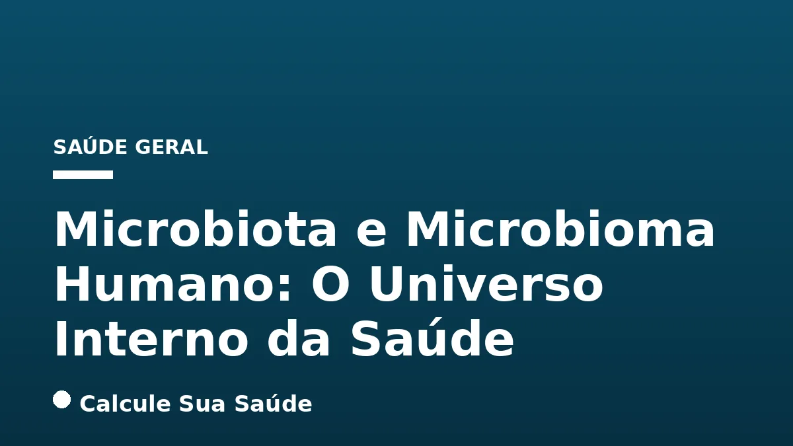

Aviso médico importante
Este conteúdo é educativo e informativo e não substitui a consulta, o diagnóstico ou o tratamento de um profissional de saúde. Em caso de sintomas, procure orientação médica.
Índice do Artigo
- 1. O Que São Microbiota e Microbioma Humano?
- 2. A Vastidão do Nosso Ecossistema Interno
- 3. A Microbiota Intestinal: O Centro da Diversidade
- 4. Funções Essenciais da Microbiota para a Saúde Humana
- 5. Disbiose Intestinal: O Desequilíbrio Silencioso
- 6. Causas e Fatores de Risco para a Disbiose
- 7. Sintomas da Disbiose: Um Quadro Multifacetado
- 8. Diagnóstico da Disbiose Intestinal: Desafios e Abordagens
- 9. Estratégias de Prevenção e Manejo da Disbiose
- 10. Probióticos e Prebióticos: Aliados da Saúde Intestinal
- 11. Transplante de Microbiota Fecal (TMF): Uma Terapia Promissora
- 12. Mitos e Verdades sobre a Microbiota Humana
- 13. A Microbiota no Contexto Brasileiro: Desafios e Perspectivas
- 14. Conclusão: O Futuro da Saúde Começa no Nosso Interior
- 15. Perguntas frequentes
No vasto e intrincado universo do corpo humano, existe um ecossistema ainda mais complexo e populoso do que imaginamos: o mundo dos microrganismos que nos habitam. Conhecido como microbiota e microbioma humano, essa comunidade de trilhões de bactérias, vírus, fungos e outros seres microscópicos desempenha um papel fundamental em nossa saúde e bem-estar, influenciando desde a digestão de alimentos até a regulação do humor e a defesa contra doenças.
Por muito tempo, esses "inquilinos" foram vistos apenas como passageiros ou, em alguns casos, como agentes patogênicos. No entanto, avanços científicos, impulsionados por projetos como o Projeto Microbioma Humano (HMP), revelaram que a relação entre nós e nossos microrganismos é, na verdade, uma simbiose profunda e essencial. Eles não apenas coexistem conosco, mas também contribuem com funções vitais que nosso próprio corpo não consegue realizar sozinho.
Compreender a dinâmica da microbiota e do microbioma é crucial para desvendar as raízes de muitas condições de saúde e desenvolver abordagens terapêuticas mais eficazes. Este artigo aprofundará nos conceitos, funções, desequilíbrios (disbiose), métodos de diagnóstico e estratégias de tratamento baseadas em evidências, oferecendo uma visão abrangente sobre esse fascinante e indispensável componente da nossa biologia.
Em resumo
- A microbiota é o conjunto de microrganismos que habitam o corpo, enquanto o microbioma inclui seus genomas e interações com o hospedeiro.
- Trilhões de microrganismos, principalmente no intestino, são vitais para digestão, imunidade, síntese de vitaminas e regulação do humor.
- Disbiose intestinal é o desequilíbrio da microbiota, causado por dieta inadequada, uso de antibióticos, estresse e outras condições.
- Sintomas da disbiose podem ser gastrointestinais (inchaço, dor, diarreia/constipação) e sistêmicos (fadiga, problemas de pele, ansiedade).
- O diagnóstico da disbiose é complexo, baseado na clínica e exames como testes respiratórios para SIBO e análise de microbiota fecal (mais para pesquisa).
- Prevenção e tratamento envolvem dieta rica em fibras, prebióticos e probióticos, manejo do estresse e, em casos específicos, Transplante de Microbiota Fecal (TMF).
1. O Que São Microbiota e Microbioma Humano?
Para iniciar nossa jornada pelo universo microbiano que nos habita, é fundamental distinguir dois conceitos-chave frequentemente utilizados de forma intercambiável, mas que possuem significados distintos: microbiota e microbioma. Embora ambos se refiram à comunidade de microrganismos, a diferença reside na abrangência de cada termo.
Microbiota Humana: Os Habitantes
A microbiota humana é definida como o conjunto de todos os microrganismos que colonizam o corpo humano. Essa vasta população inclui principalmente bactérias, mas também vírus, fungos, leveduras e protozoários, que residem em diversos tecidos e fluidos, como o intestino, a pele, a boca, o trato geniturinário e o trato respiratório. Esses microrganismos vivem em uma relação simbiótica conosco, ou seja, uma relação de benefício mútuo, onde ambos os lados se beneficiam da convivência.
Microbioma Humano: O Ecossistema Completo
Já o microbioma humano é um conceito mais abrangente e moderno. Ele não se limita apenas aos microrganismos em si (a microbiota), mas engloba também seus genomas (o conjunto de todos os genes desses microrganismos), seus transcriptomas (o conjunto de todas as moléculas de RNA), proteomas (o conjunto de todas as proteínas) e metabolomas (o conjunto de todos os metabólitos produzidos). Além disso, o microbioma inclui a complexa rede de interações entre as células microbianas e as células e sistemas do hospedeiro humano. Em essência, o microbioma representa o ecossistema completo, com seus habitantes, seus genes e suas atividades metabólicas, e como tudo isso se relaciona com a nossa biologia.
2. A Vastidão do Nosso Ecossistema Interno
A dimensão da comunidade microbiana que reside em nosso corpo é verdadeiramente impressionante. Estima-se que existam trilhões de microrganismos vivendo em nós, superando o número de células humanas em uma proporção de aproximadamente 10 para 1. Apesar de sua vasta quantidade, devido ao seu tamanho diminuto, esses microrganismos representam apenas cerca de 1% a 3% da massa corporal total de um adulto. Para um indivíduo de 90 kg, isso equivale a uma massa de 0,9 kg a 2,7 kg de bactérias.
O Projeto Microbioma Humano (HMP), uma iniciativa ambiciosa lançada pelo National Institutes of Health (NIH) em 2007, revolucionou nossa compreensão sobre essa comunidade. Os resultados do HMP revelaram que mais de 10.000 espécies microbianas diferentes ocupam o ecossistema humano. O mais notável é que, embora a diversidade total seja enorme, cada indivíduo carrega em média cerca de 1.000 espécies distintas. Essa variabilidade individual é um dos aspectos mais fascinantes do microbioma.
A contribuição genética desses microrganismos é igualmente surpreendente. O genoma microbiano coletivo contribui com aproximadamente 8 milhões de genes únicos codificadores de proteínas. Esse número é cerca de 360 vezes maior do que os 22.000 genes humanos, destacando a imensa capacidade metabólica e funcional que a microbiota confere ao nosso organismo. Essa vasta biblioteca genética microbiana é vital para a nossa sobrevivência e para a manutenção da nossa saúde.
3. A Microbiota Intestinal: O Centro da Diversidade
Embora o corpo humano abrigue microrganismos em diversas localizações anatômicas – como a pele, a boca, o trato geniturinário, o trato respiratório e os olhos – a microbiota intestinal é, sem dúvida, a mais diversa, abundante e intensamente estudada. O trato gastrointestinal, particularmente o intestino grosso (cólon), é o principal habitat para trilhões desses microrganismos, formando um complexo ecossistema que influencia profundamente a saúde sistêmica.
Em um estado de saúde, a microbiota intestinal é predominantemente composta por quatro grandes grupos de bactérias, conhecidos como filos: *Firmicutes*, *Bacteroidetes*, *Proteobacteria* e *Actinobacteria*. O equilíbrio entre esses filos, juntamente com uma alta diversidade de espécies e uma atividade funcional robusta, é considerado um marcador essencial para o bom funcionamento do organismo. Um desequilíbrio nessa composição pode ter repercussões significativas.
A composição da microbiota intestinal é dinâmica e moldada por uma série de fatores desde o nascimento, incluindo o tipo de parto (vaginal ou cesariana), a amamentação, a dieta, o ambiente, o uso de medicamentos (especialmente antibióticos) e o estilo de vida. Essa plasticidade ressalta a importância de mantermos hábitos saudáveis para nutrir e preservar a diversidade e o equilíbrio desse ecossistema interno.
4. Funções Essenciais da Microbiota para a Saúde Humana
A microbiota, especialmente a intestinal, não é apenas uma coleção passiva de microrganismos; ela é um órgão funcional com um impacto profundo e multifacetado na nossa saúde. Suas contribuições são tão diversas que afetam desde a nutrição até a imunidade e o bem-estar mental.
Digestão e Absorção de Nutrientes
Uma das funções mais conhecidas da microbiota intestinal é seu papel na digestão. Ela auxilia na quebra de fibras e amidos complexos que o corpo humano, por si só, não consegue digerir. Através de um processo de fermentação de carboidratos não digeridos no cólon, a microbiota gera compostos cruciais conhecidos como ácidos graxos de cadeia curta (AGCC), como butirato, propionato e acetato. Esses AGCCs são uma fonte primária de energia para as células do cólon (enterócitos) e desempenham papéis importantes na modulação da inflamação e do metabolismo energético.
Funções Imunológicas
A microbiota é um pilar fundamental para o desenvolvimento e a manutenção de um sistema imunológico saudável. Ela estimula a maturação das células imunes, "treina" o sistema imunológico a distinguir entre patógenos e comensais (microrganismos benéficos) e mantém a integridade da barreira intestinal protetora. Essa barreira é crucial para impedir a translocação de bactérias indesejáveis e toxinas para a corrente sanguínea, um fenômeno conhecido como resistência à colonização.
Síntese de Vitaminas e Aminoácidos
Nossos "inquilinos" microbianos são verdadeiras fábricas bioquímicas. Eles são responsáveis pela produção de vitaminas essenciais, como as vitaminas do complexo B (incluindo B12, folato e biotina) e a vitamina K, que são vitais para a coagulação sanguínea e a saúde óssea. Além disso, a microbiota pode sintetizar diversos aminoácidos, blocos construtores de proteínas, contribuindo para as necessidades nutricionais do hospedeiro.
Regulação da Saciedade e Humor (Eixo Intestino-Cérebro)
A influência da microbiota se estende até o cérebro, através de uma comunicação bidirecional conhecida como eixo intestino-cérebro. Os AGCCs, por exemplo, têm um papel importante na regulação da saciedade, influenciando hormônios que controlam o apetite. Além disso, estudos crescentes demonstram uma forte associação entre alterações na composição da microbiota e condições neuropsiquiátricas, como ansiedade e depressão, sugerindo que a saúde intestinal pode impactar diretamente nosso bem-estar mental.
Para ilustrar a amplitude dessas funções, a tabela abaixo resume os principais papéis da microbiota intestinal:
| Função | Descrição | Exemplos/Impacto |
|---|---|---|
| Digestão e Metabolismo | Quebra de carboidratos complexos não digeríveis pelo corpo humano. | Produção de Ácidos Graxos de Cadeia Curta (AGCC) como butirato, propionato e acetato, que fornecem energia ao cólon e modulam o metabolismo. |
| Imunidade | Desenvolvimento e modulação do sistema imunológico. | Estimula a imunidade, mantém a barreira intestinal, previne a colonização por patógenos (resistência à colonização). |
| Síntese Nutricional | Produção de vitaminas e aminoácidos essenciais. | Sintetiza vitaminas B e K, e aminoácidos necessários para diversas funções corporais. |
| Regulação Neuroendócrina | Influência na saciedade, humor e função cerebral. | AGCCs regulam a saciedade; associação com ansiedade e depressão via eixo intestino-cérebro. |
| Proteção | Defesa contra patógenos. | Compete por nutrientes e sítios de ligação, produz substâncias antimicrobianas. |
5. Disbiose Intestinal: O Desequilíbrio Silencioso
Quando o delicado equilíbrio da microbiota intestinal é perturbado, entramos em um estado conhecido como disbiose intestinal. Essa condição é caracterizada por uma alteração na composição, diversidade ou funcionamento da microbiota, resultando em um desequilíbrio entre microrganismos benéficos e prejudiciais. A disbiose frequentemente se manifesta como uma redução da diversidade microbiana e uma proliferação de espécies com potencial pró-inflamatório, o que pode ter consequências significativas para a saúde.
A disbiose não é uma doença em si, mas sim um estado de desequilíbrio que pode estar associado a uma ampla gama de condições de saúde. Ela pode variar em gravidade e manifestação, desde sintomas gastrointestinais leves e intermitentes até contribuir para o desenvolvimento ou agravamento de doenças crônicas e sistêmicas. Compreender a disbiose é o primeiro passo para restaurar a harmonia do ecossistema intestinal e, consequentemente, promover a saúde geral.
É importante ressaltar que a disbiose não é um conceito de "tudo ou nada"; ela existe em um espectro. Pequenas flutuações na composição da microbiota são normais, mas quando o desequilíbrio se torna persistente e significativo, as funções essenciais da microbiota podem ser comprometidas, abrindo caminho para uma série de problemas de saúde.
6. Causas e Fatores de Risco para a Disbiose
A disbiose intestinal é uma condição multifatorial, o que significa que não há uma única causa, mas sim uma interação complexa de diversos fatores internos e externos que podem perturbar o equilíbrio da microbiota. Reconhecer esses fatores é crucial para a prevenção e o manejo eficazes.
Dieta Inadequada
A alimentação é um dos pilares mais importantes na modulação da microbiota. Uma dieta ocidentalizada, caracterizada pelo consumo excessivo de proteínas, açúcar, alimentos ultraprocessados e/ou ricos em gorduras saturadas, e pobre em fibras, frutas e vegetais, é um dos principais fatores de risco. A falta de fibras, por exemplo, priva as bactérias benéficas de seu principal alimento, enquanto o excesso de açúcar pode favorecer o crescimento de microrganismos prejudiciais. Da mesma forma, o consumo frequente de alimentos ultraprocessados, com seus aditivos e baixo valor nutricional, pode impactar negativamente a diversidade e função da microbiota.
Uso de Medicamentos
Certos medicamentos têm um impacto direto e muitas vezes deletério sobre a microbiota. Os antibióticos, embora essenciais para combater infecções bacterianas, são notórios por sua capacidade de "varrer" tanto as bactérias patogênicas quanto as benéficas, alterando drasticamente a flora intestinal e abrindo espaço para a proliferação de bactérias oportunistas como *Clostridioides difficile*. Outros medicamentos, como os inibidores de bomba de prótons (usados para reduzir a acidez estomacal), também podem influenciar a composição microbiana.
Estresse e Estilo de Vida
O estresse crônico e a ansiedade não afetam apenas a mente; eles têm um impacto significativo no sistema imunológico e na função intestinal, podendo levar à disbiose. O eixo intestino-cérebro garante que o estado mental influencie diretamente a saúde digestiva. Além disso, o consumo excessivo de álcool é nocivo para a microbiota, assim como a má higiene bucal, que pode permitir a migração de bactérias para o trato gastrointestinal. O sedentarismo e o sono insuficiente também são fatores que contribuem para um ambiente intestinal desfavorável.
Outros Fatores
Infecções intestinais prévias, exposição a produtos químicos (como pesticidas em alimentos não lavados), a idade (a composição da microbiota varia ao longo da vida) e doenças pré-existentes, como Síndrome do Intestino Irritável (SII), doenças inflamatórias intestinais (colite, doença de Crohn), doença celíaca, supercrescimento bacteriano do intestino delgado (SIBO), obesidade, doenças autoimunes, doenças hepáticas (como a esteatose hepática) e diabetes tipo 2, são todos fatores que podem predispor ou agravar a disbiose. Mesmo o jejum prolongado pode levar a um desequilíbrio, dependendo do contexto.
7. Sintomas da Disbiose: Um Quadro Multifacetado
Os sintomas da disbiose intestinal são variados e podem se manifestar de formas distintas, abrangendo sistemas gastrointestinais, metabólicos, neurológicos e imunológicos. Essa diversidade torna o diagnóstico um desafio, pois muitos dos sintomas podem ser confundidos com outras condições.
Sintomas Gastrointestinais
São os mais diretamente associados à disbiose e frequentemente os primeiros a serem notados. Incluem:
- Distensão abdominal (inchaço) e flatulência (gases): Causados pela fermentação excessiva de alimentos por bactérias desequilibradas.
- Dor ou desconforto abdominal: Pode variar de leve a intensa.
- Alterações do hábito intestinal: Diarreia, constipação ou uma alternância entre ambos.
- Refluxo, náuseas e vômitos: Indicam problemas na digestão superior.
- Halitose (mau hálito): Pode ser um sinal de desequilíbrio microbiano.
- Digestão lenta ou pesada: Sensação de que os alimentos "ficam parados" no estômago.
- Sensação de que certos alimentos causam mal-estar: Intolerâncias alimentares podem ser exacerbadas ou surgir devido à disbiose.
- Piora dos sintomas após uso de antibióticos ou infecção intestinal: Um indicativo claro de que a microbiota foi afetada.
Sintomas Sistêmicos
Além dos problemas digestivos, a disbiose pode ter repercussões em todo o corpo, manifestando-se como:
- Fadiga crônica: A inflamação e a má absorção de nutrientes podem levar à exaustão.
- Problemas de pele: Condições como acne, psoríase e outras erupções cutâneas têm sido associadas ao desequilíbrio intestinal.
- Ansiedade e depressão: O eixo intestino-cérebro é fundamental, e a disbiose pode contribuir para alterações no humor.
- Inflamação e dor nas articulações: A permeabilidade intestinal aumentada pode permitir que substâncias pró-inflamatórias entrem na corrente sanguínea.
- Azia e intolerâncias alimentares: Podem ser sintomas diretos ou indiretos do desequilíbrio.
A tabela a seguir resume os sintomas mais comuns da disbiose:
| Tipo de Sintoma | Exemplos Comuns |
|---|---|
| Gastrointestinais | Distensão abdominal, gases, dor abdominal, diarreia, constipação, refluxo, náuseas, halitose, digestão lenta, mal-estar após comer. |
| Sistêmicos | Fadiga crônica, problemas de pele (acne, psoríase), ansiedade, depressão, inflamação e dor nas articulações, azia, intolerâncias alimentares. |
8. Diagnóstico da Disbiose Intestinal: Desafios e Abordagens
O diagnóstico da disbiose intestinal é um processo complexo, pois, diferentemente de muitas doenças com marcadores claros, não existe uma única prova definitiva ou critérios universais para sua identificação. O profissional de saúde deve basear-se em uma abordagem holística, combinando a história clínica detalhada do paciente com a análise cuidadosa dos sintomas.
História Clínica e Avaliação de Sintomas
A primeira e mais importante etapa é a coleta da história clínica, que inclui padrões alimentares, uso de medicamentos, níveis de estresse, histórico de infecções e a descrição dos sintomas. A persistência e a combinação de sintomas gastrointestinais e sistêmicos, especialmente quando relacionados a fatores de risco conhecidos, podem levantar a suspeita de disbiose.
Exames Complementares
Embora não haja um "teste de disbiose" padronizado, alguns exames podem ser solicitados para identificar microrganismos em desequilíbrio ou suas consequências:
- Testes respiratórios: São frequentemente utilizados para detectar o supercrescimento bacteriano do intestino delgado (SIBO). Nesses testes, o ar exalado é analisado para gases (hidrogênio e metano) produzidos por bactérias que fermentam carboidratos no intestino delgado, onde normalmente não deveriam estar em grande quantidade.
- Análise de microbiota fecal por sequenciamento (metagenômica ou 16S rRNA): Este tipo de exame avalia a composição genética da microbiota presente nas fezes, oferecendo um perfil detalhado das espécies e filos bacterianos. Embora seja uma ferramenta poderosa em pesquisa, sua interpretação clínica ainda é limitada e deve ser feita com cautela, sendo mais útil em casos complexos ou em contextos de estudo. A ciência ainda está aprendendo a definir o que é uma microbiota "saudável" para cada indivíduo.
- Análise de ácidos orgânicos na urina: Pode refletir metabólitos microbianos anômalos produzidos por bactérias ou leveduras no intestino. Embora não seja um exame diagnóstico direto de disbiose, é utilizado em algumas abordagens de medicina funcional para indicar desequilíbrios metabólicos relacionados à microbiota.
É fundamental lembrar que a disbiose pode apresentar sintomas semelhantes a outras condições gastrointestinais, como a Síndrome do Intestino Irritável (SII), Doenças Inflamatórias Intestinais (DII) e intolerâncias alimentares. Portanto, um diagnóstico diferencial cuidadoso é essencial para garantir o tratamento adequado e evitar intervenções desnecessárias ou ineficazes.
9. Estratégias de Prevenção e Manejo da Disbiose
O tratamento da disbiose geralmente se concentra em abordar as causas subjacentes e em restabelecer o equilíbrio do microbioma. A boa notícia é que muitas das estratégias de prevenção são também as bases do tratamento, focando em mudanças no estilo de vida e na dieta.
Dieta Balanceada e Rica em Fibras
A alimentação é a ferramenta mais poderosa para modular a microbiota. Consumir uma variedade de frutas, vegetais, leguminosas, frutos secos e cereais integrais é fundamental. Esses alimentos fornecem diferentes tipos de fibra, que servem como substrato para os microrganismos intestinais benéficos, promovendo sua proliferação e diversidade.
Alimentos Prebióticos e Probióticos
Incluir alimentos prebióticos, que são fibras não digeríveis que estimulam seletivamente o crescimento e a atividade de bactérias benéficas, é uma estratégia eficaz. Exemplos incluem chicória, alcachofra, alho-poró, aspargos, alho e cebola. Alimentos probióticos e fermentados, como iogurte natural, kefir, chucrute e kombucha, contêm culturas vivas de bactérias específicas que podem enriquecer a microbiota intestinal.
Evitar Alimentos Prejudiciais
Reduzir o consumo de açúcares refinados, álcool, alimentos ultraprocessados e gorduras saturadas é crucial. Esses itens podem promover o crescimento de bactérias menos desejáveis e contribuir para a inflamação intestinal.
Uso Consciente de Antibióticos
Antibióticos devem ser usados apenas quando estritamente necessários e sob orientação médica. Quando o uso é inevitável, estratégias para proteger a microbiota, como a suplementação com probióticos específicos, podem ser consideradas.
Gerenciamento do Estresse e Estilo de Vida Saudável
Técnicas de gerenciamento do estresse, como meditação, ioga e atividade física regular, podem impactar positivamente a microbiota através do eixo intestino-cérebro. Uma higiene bucal adequada, hidratação suficiente e um sono de qualidade também são componentes essenciais para a saúde intestinal geral.
10. Probióticos e Prebióticos: Aliados da Saúde Intestinal
No arsenal de estratégias para manter ou restabelecer o equilíbrio da microbiota, os probióticos e prebióticos se destacam como ferramentas com respaldo científico. Embora seus nomes sejam semelhantes, suas funções são distintas e complementares.
Probióticos: Microrganismos Benéficos Vivos
Probióticos são microrganismos vivos que, quando administrados em quantidades adequadas, conferem um benefício à saúde do hospedeiro. Eles são amplamente utilizados para modular a composição e a atividade da microbiota intestinal. Os probióticos podem ser encontrados em alimentos fermentados (como iogurte e kefir) ou em suplementos. Seus efeitos benéficos incluem o restabelecimento do equilíbrio microbiano após perturbações (como o uso de antibióticos), o estímulo ao sistema imunológico, a melhoria da digestão e a redução de sintomas gastrointestinais.
Um exemplo notável é a estirpe *Saccharomyces boulardii* CNCM I-745, que demonstrou em estudos clínicos a capacidade de reduzir a frequência e a duração da diarreia associada a antibióticos, bem como o risco de infecção por *Clostridioides difficile* após o tratamento com esses medicamentos. A escolha do probiótico ideal depende da condição a ser tratada, e a orientação de um profissional de saúde é fundamental.
Prebióticos: O Alimento para as Bactérias Boas
Os prebióticos são componentes alimentares não digeríveis que promovem seletivamente o crescimento e/ou a atividade de uma ou mais bactérias benéficas já presentes no cólon, conferindo um benefício à saúde. Em outras palavras, eles são o "alimento" preferencial para as bactérias "boas" da nossa microbiota.
As fibras alimentares são os prebióticos mais conhecidos. Alimentos como chicória, alcachofra, alho-poró, aspargos, alho, cebola, banana verde e cereais integrais são excelentes fontes de prebióticos. Ao consumir esses alimentos, estamos nutrindo as bactérias que produzem AGCCs e outros metabólitos benéficos, fortalecendo o ecossistema intestinal e contribuindo para a saúde digestiva e sistêmica.
A combinação de probióticos e prebióticos, conhecida como simbióticos, é uma estratégia que visa otimizar os benefícios, fornecendo tanto os microrganismos benéficos quanto o alimento para eles prosperarem.
11. Transplante de Microbiota Fecal (TMF): Uma Terapia Promissora
O Transplante de Microbiota Fecal (TMF) é uma intervenção terapêutica que consiste na transferência de fezes de um doador saudável para o trato gastrointestinal de um receptor, com o objetivo de restaurar uma microbiota intestinal equilibrada. Embora possa parecer incomum, o TMF tem demonstrado eficácia notável em condições específicas e é uma área de intensa pesquisa.
Infecção Recorrente por Clostridioides difficile
A indicação mais bem estabelecida e com forte evidência científica para o TMF é a infecção recorrente por *Clostridioides difficile*. Esta bactéria oportunista pode proliferar após o uso de antibióticos, causando diarreia grave e potencialmente fatal. O TMF tem se mostrado altamente eficaz na restauração da microbiota e na prevenção de novas recorrências, com taxas de sucesso elevadas.
Colite Ulcerosa (CU)
Para a Colite Ulcerosa (CU), uma doença inflamatória intestinal, há evidências de que o TMF pode induzir remissão em alguns pacientes. No entanto, os dados sobre a manutenção da remissão a longo prazo ainda são limitados. A evidência é muito incerta em relação ao risco de eventos adversos graves e à melhoria da qualidade de vida, e seu uso deve ser cuidadosamente avaliado. Para outras doenças inflamatórias intestinais (DII), como a doença de Crohn, a evidência é ainda mais incerta, e o TMF só deve ser considerado como parte de um ensaio clínico.
Síndrome do Intestino Irritável (SII)
Um estudo recente sugere que o TMF pode contribuir para a melhoria dos sintomas da Síndrome do Intestino Irritável (SII) e da qualidade de vida dos pacientes, com benefícios que podem persistir até um ano após o tratamento. Contudo, é crucial que o doador seja rigorosamente selecionado e saudável para minimizar riscos. Para outras indicações além das mencionadas, o TMF não deve ser utilizado fora do contexto de um ensaio clínico.
Segurança e Seleção de Doadores
A segurança do TMF é uma preocupação primordial. Os doadores de fezes são submetidos a um rastreamento rigoroso para uma ampla gama de doenças infecciosas e condições de saúde. Os efeitos adversos mais comuns no receptor são principalmente gastrointestinais (como inchaço, gases, diarreia leve) e geralmente se resolvem na semana seguinte ao transplante. No entanto, os dados sobre a segurança a longo prazo ainda são limitados, e a pesquisa continua a aprimorar os protocolos e a compreensão dos riscos e benefícios.
12. Mitos e Verdades sobre a Microbiota Humana
A crescente popularidade do tema "microbiota" trouxe consigo uma onda de informações, algumas baseadas em ciência sólida e outras que se tornaram mitos. É fundamental discernir o que a pesquisa científica realmente nos diz.
Mito: Existe uma microbiota "normal" única para todas as pessoas.
Ciência: Este é um dos mitos mais persistentes. A verdade é que a composição da microbiota varia significativamente entre indivíduos. Fatores como idade, dieta, ambiente, histórico de uso de medicamentos e características genéticas individuais moldam um perfil microbiano único para cada pessoa. Não há uma única microbiota que possa ser considerada "normal" para todos. Encontrar diferenças na sua microbiota em relação a um grupo de referência não significa automaticamente que você está doente; significa apenas que você é único.
Mito: A disbiose é sempre a causa direta de uma doença.
Ciência: Embora a disbiose esteja consistentemente associada a uma vasta gama de doenças – incluindo condições digestivas, inflamatórias, metabólicas e de outros sistemas – estabelecer uma relação causal direta (ou seja, que a alteração microbiana *provoca* a doença) ainda é um dos maiores desafios da pesquisa. Muitas vezes, a disbiose pode ser uma consequência da doença, ou pode haver uma relação bidirecional onde a alteração microbiana e a doença se influenciam mutuamente. A ciência ainda está desvendando a complexidade dessas interações, e é imprudente afirmar que a disbiose é sempre a causa primária de todas as enfermidades.
Mito: Todos os probióticos são iguais e servem para tudo.
Ciência: Diferentes estirpes de probióticos têm diferentes efeitos. Um probiótico que ajuda na diarreia associada a antibióticos pode não ser eficaz para a Síndrome do Intestino Irritável, por exemplo. A eficácia é estirpe-específica e dose-dependente. A escolha de um probiótico deve ser baseada em evidências científicas para a condição específica que se deseja tratar, e não em uma abordagem genérica.
É crucial manter uma perspectiva crítica e buscar informações de fontes confiáveis, baseadas em evidências científicas, para evitar cair em armadilhas de informações equivocadas ou promessas exageradas.
13. A Microbiota no Contexto Brasileiro: Desafios e Perspectivas
Embora o estudo da microbiota humana seja uma área de pesquisa global, o contexto brasileiro apresenta desafios e particularidades importantes. A diversidade genética da população, os hábitos alimentares regionais e a prevalência de certas doenças infecciosas e crônicas podem influenciar a composição e a função da microbiota dos brasileiros.
Atualmente, não foram encontrados dados epidemiológicos específicos sobre a prevalência de disbiose no Brasil nas fontes pesquisadas. Isso reflete uma lacuna na pesquisa nacional que precisa ser preenchida para compreendermos melhor o impacto desse desequilíbrio na saúde da população brasileira.
No entanto, sabe-se que doenças inflamatórias intestinais (DII), como a colite ulcerosa e a doença de Crohn, que estão fortemente associadas à disbiose, têm apresentado um aumento significativo no país. O Portal Drauzio Varella, por exemplo, mencionou um aumento de quase 60% nos casos de DII em cinco anos no Brasil. Esse dado, embora não seja diretamente sobre disbiose, sugere que os fatores que contribuem para o desequilíbrio da microbiota estão em ascensão, o que pode indicar uma prevalência crescente de disbiose subjacente.
A pesquisa no Brasil sobre microbiota e microbioma está em desenvolvimento, com grupos de pesquisa explorando a microbiota de populações indígenas, a influência da dieta brasileira e o papel da microbiota em doenças tropicais. Essas investigações são cruciais para desenvolver estratégias de prevenção e tratamento mais adaptadas à realidade local, considerando a rica biodiversidade e as particularidades culturais e ambientais do país.
14. Conclusão: O Futuro da Saúde Começa no Nosso Interior
O estudo da microbiota e do microbioma humano abriu uma nova fronteira na compreensão da saúde e da doença. Longe de serem meros passageiros, os trilhões de microrganismos que nos habitam são parceiros essenciais, cujas funções se estendem por todos os sistemas do corpo, desde a digestão e a imunidade até a regulação do humor e do metabolismo.
A disbiose, o desequilíbrio desse delicado ecossistema, é um fator contribuinte para uma miríade de condições de saúde, e sua prevenção e tratamento representam um caminho promissor para a medicina personalizada. Através de escolhas dietéticas conscientes, um estilo de vida ativo, manejo do estresse e, em casos específicos, intervenções como probióticos e o Transplante de Microbiota Fecal, podemos cultivar um ambiente interno que promova a saúde e o bem-estar.
É fundamental que a população e os profissionais de saúde continuem a se educar sobre a importância do microbioma, baseando-se em evidências científicas sólidas e evitando modismos ou promessas sem fundamento. O futuro da saúde, em grande parte, reside na nossa capacidade de compreender, nutrir e respeitar o universo microbiano que reside em nosso interior.
Lembre-se: este conteúdo é educativo e não substitui a avaliação de um profissional de saúde. Em caso de sintomas ou dúvidas, procure sempre orientação médica.
15. Perguntas frequentes
Qual a diferença entre microbiota e microbioma?
A microbiota refere-se ao conjunto de microrganismos (bactérias, vírus, fungos) que habitam o corpo humano. O microbioma é um conceito mais amplo, que inclui não apenas esses microrganismos, mas também seus genomas, seus produtos metabólicos e as interações com o hospedeiro humano.
Onde a microbiota é mais abundante no corpo humano?
A microbiota é encontrada em diversas partes do corpo, como pele, boca e trato geniturinário. No entanto, a microbiota intestinal, especialmente no intestino grosso (cólon), é a mais abundante e diversa, abrigando trilhões de microrganismos.
Quais são as principais funções da microbiota intestinal?
A microbiota intestinal desempenha funções vitais, incluindo a digestão de fibras e produção de ácidos graxos de cadeia curta (AGCC), o desenvolvimento e modulação do sistema imunológico, a síntese de vitaminas (B e K) e aminoácidos, e a regulação da saciedade e do humor através do eixo intestino-cérebro.
O que causa a disbiose intestinal?
A disbiose intestinal é multifatorial. As principais causas incluem dieta pobre em fibras e rica em ultraprocessados, uso de antibióticos e outros medicamentos, estresse crônico, infecções intestinais, consumo excessivo de álcool, sedentarismo e certas doenças pré-existentes.
Como a disbiose intestinal é diagnosticada?
O diagnóstico da disbiose é complexo e baseado na história clínica do paciente e nos sintomas. Exames como testes respiratórios para SIBO e análise de microbiota fecal por sequenciamento (mais para pesquisa) podem ser utilizados, mas não há um teste único e universalmente aceito.
Quais são os tratamentos eficazes para a disbiose?
O tratamento foca em restabelecer o equilíbrio. Inclui uma dieta rica em fibras, prebióticos e alimentos fermentados, redução de açúcares e ultraprocessados, manejo do estresse, sono adequado e uso consciente de antibióticos. Em casos específicos, probióticos direcionados e Transplante de Microbiota Fecal (TMF) podem ser indicados.
O Transplante de Microbiota Fecal (TMF) é seguro e para quais condições é indicado?
O TMF é considerado seguro para infecção recorrente por *Clostridioides difficile*, sendo esta sua indicação mais forte. Há evidências promissoras para Colite Ulcerosa (indução de remissão) e Síndrome do Intestino Irritável, mas para outras condições, seu uso deve ser restrito a ensaios clínicos devido à limitação de dados de segurança a longo prazo.
Leia também
Referências e Fontes
1. Biocodex Microbiota Institute. Descubra as microbiotas. Disponível em: biocodexmicrobiotainstitute.com
2. NIH. The Human Microbiome Project. Disponível em: irp.nih.gov
3. NIH Common Fund. Human Microbiome Project (HMP). Disponível em: commonfund.nih.gov
4. Jornal da USP. Microbiota intestinal: como os microrganismos influenciam em nosso corpo e bem-estar. Disponível em: jornal.usp.br
5. Quirónsalud. Disbiosis intestinal: síntomas, causas, diagnóstico y tratamiento. Disponível em: quironsalud.es
6. PiLeJe. ¿Tienes disbiosis intestinal? Síntomas, causas y soluciones. Disponível em: pileje.es
7. CUF. Disbiose intestinal: sabe o que é?. Disponível em: cuf.pt
8. UL-250. O que é a Disbiose Intestinal e porque acontece?. Disponível em: ul-250.pt